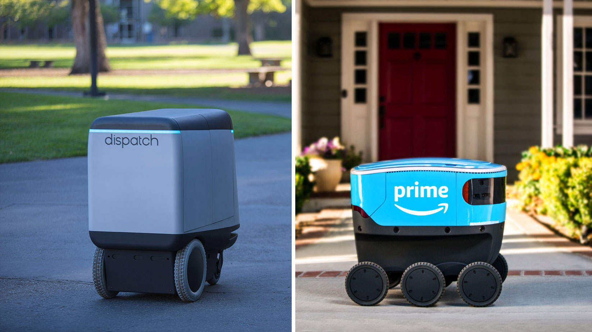

Since Robotics is the field concerned with the connection of perception to action, Artificial Intelligence must have a central role in Robotics if the connection is to be intelligent. Artificial Intelligence addresses the crucial questions of what knowledge is required in any aspect of thinking how should that knowledge be represented; and how should that knowledge be used. Robotics challenges AI by forcing it to deal with real objects in the real world. Techniques and representations developed for purely cognitive problems, often in toy domains, do not necessarily extend to meet the challenge. Robots combine mechanical effectors, sensors, and computers. AI has made significant contributions to each component. We review AI contributions to perception and reasoning about physical objects. Such reasoning concerns space,
